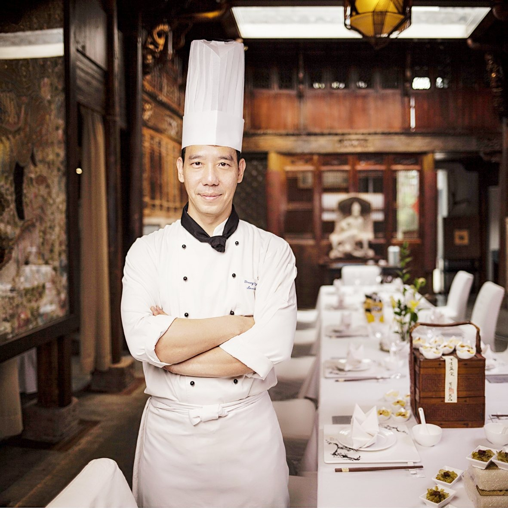

行政总厨 · 餐饮运营管理Executive Chef · F&B Operations
来自台湾台北，现居广东深圳。近 30 年国际星级酒店与连锁餐饮经验，专注台湾菜、粤菜、西餐宴会、意大利菜与中西融合料理。 Born in Taipei, based in Shenzhen. Nearly 30 years in international hotels and multi-outlet restaurant groups, specializing in Taiwanese, Cantonese, Western banquet, Italian and Chinese-Western fusion cuisine.

我来自中国台湾，拥有近 30 年餐饮主厨与餐饮运营管理经验。1998–2006 年，任职于台北多家国际星级酒店，先后在台北君悦、华国洲际、喜来登担任宴会厅、意大利餐厅、咖啡厅及无国界融合料理岗位，从厨房领班成长到厨房主厨，深耕台湾菜、粤菜、西餐、中西融合菜的出品标准、后厨管理与大型宴会餐食统筹。
2006 年来到深圳发展，曾任年代西餐厅行政总厨；之后在北京负责轻食/西餐项目，担任行政总厨。2011–2025 年任职深圳紫苑文化发展有限公司，担任副总经理兼任行政总厨，全面负责餐饮板块，统筹管理最多 7 家门店的整体运营、菜品研发、后厨团队搭建、成本管控与品控，积累了餐饮品牌落地、多门店连锁管理实战经验。至今任职深圳市焰椒餐饮管理有限公司，担任宝岛美食街-台湾美食顾问。
专业上擅长台湾菜、粤菜、西餐宴会、意大利菜系，热衷于走访各地发掘优质时令原生食材，运用西式料理技法进行创意重构，打造独树一帜的中西融合菜品；擅长菜品配方标准卡（Recipe card）的编制与落地，督导现场人员严格依照标准执行，保障跨门店菜品口味稳定统一；兼具一线菜品研发能力与多门店餐饮运营管理经验，既能把控后厨出品，也能统筹门店经营。
欢迎餐饮合作、菜品研发顾问及工作机会洽谈。
I am from Taiwan, China, with nearly 30 years of experience as a chef and in F&B operations management. From 1998 to 2006 I worked at international star-rated hotels in Taipei — Grand Hyatt Taipei, InterContinental Taipei and Sheraton Taipei — in banquet, Italian restaurant, café and global fusion kitchens, growing from Chef de Partie to Chef de Cuisine. I specialize in production standards, back-of-house management and large-scale banquet coordination for Taiwanese, Cantonese, Western and Chinese-Western fusion cuisine.
I moved to Shenzhen in 2006 as Executive Chef of ERA Western Restaurant, and later led light-food and Western cuisine projects in Beijing as Executive Chef. From 2011 to 2025 I was Vice General Manager and Executive Chef at Shenzhen Ziyuan Cultural Development Co., Ltd., in full charge of the F&B division — operations, menu R&D, kitchen team building, cost control and quality assurance for up to 7 outlets. I am currently the Taiwan Cuisine Consultant for Treasure Island Food Street at Shenzhen Yanjiao Catering Management Co., Ltd.
I enjoy traveling to source premium seasonal ingredients and reinterpreting them with Western techniques to create distinctive fusion dishes. I excel at developing and implementing recipe cards and supervising teams to follow them, keeping flavors consistent across outlets — combining hands-on menu development with multi-store operations management.
I welcome conversations about F&B partnerships, menu consulting and new opportunities.
深圳市焰椒餐饮管理有限公司Shenzhen Yanjiao Catering Management Co., Ltd.
深圳紫苑文化发展有限公司 · 中西融合菜、粤菜、花胶鸡火锅 · 统筹最多 7 家门店Shenzhen Ziyuan Cultural Development Co., Ltd. · Fusion, Cantonese, fish-maw chicken hot pot · up to 7 outlets
北京泰笛黛丝食品公司Taste-tasty Western Restaurant, Beijing
深圳年代西餐厅ERA Western Restaurant, Shenzhen
台北喜来登酒店Sheraton Hotel Taipei
台北喜来登酒店 · 2002 年兼任台北育达高级中学餐饮顾问教师Sheraton Hotel Taipei · also culinary advisor-teacher at Yu Da High School, Taipei (2002)
台北华国洲际酒店InterContinental Hotel Taipei
台北君悦酒店Grand Hyatt Hotel Taipei
为每道菜编制配方成本标准卡（Recipe card / BOM），列明原料、用量、成本与操作步骤，督导各门店严格执行，保证出品稳定统一。Every dish is documented on a standard recipe card / BOM — ingredients, quantities, cost and method — so that each outlet produces it consistently.